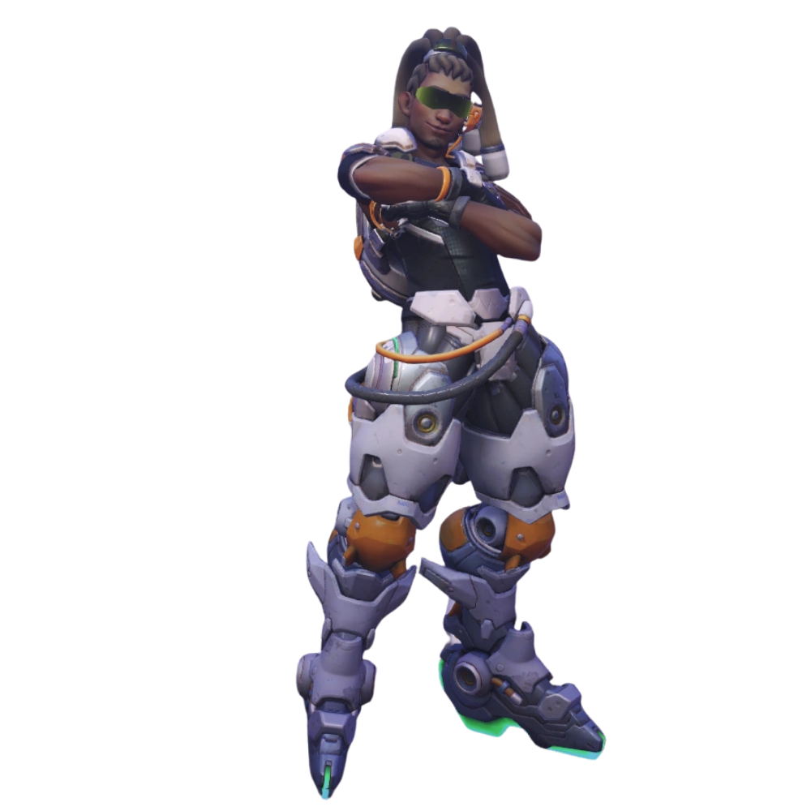

Original releases, collaborations, and live performances. Studio work spans electronic composition, synthesis, and production — with a rotating cast of instruments and people. The collaborations section includes artists and projects where the music happened together rather than alone.